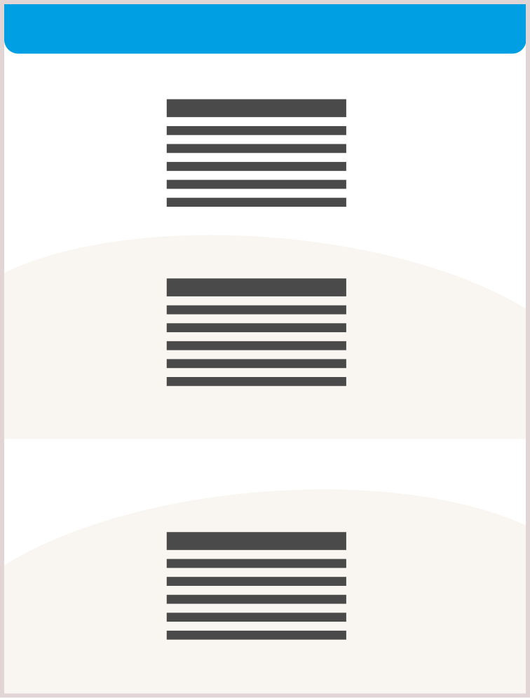
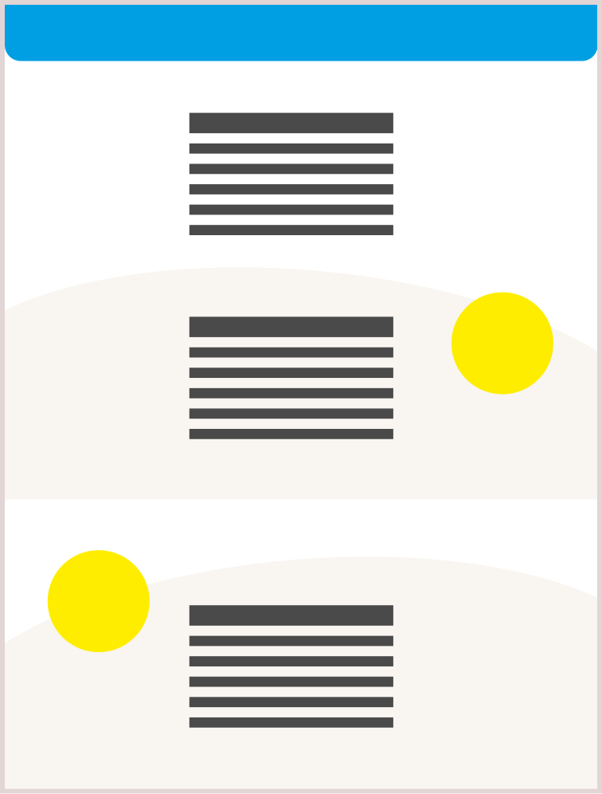
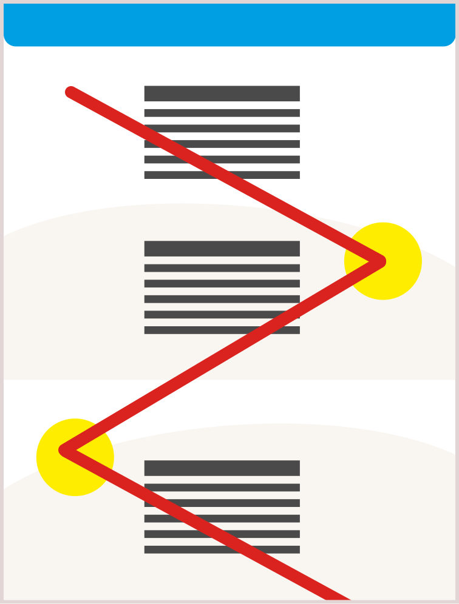
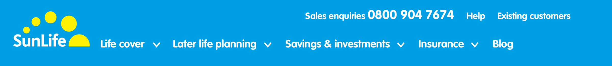
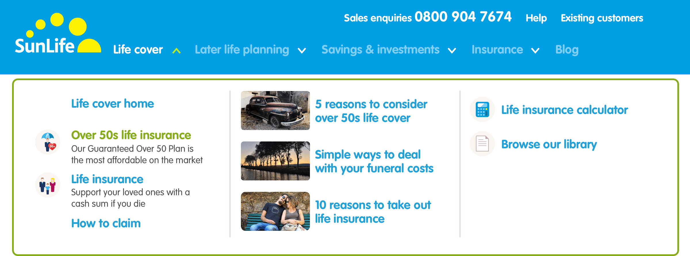
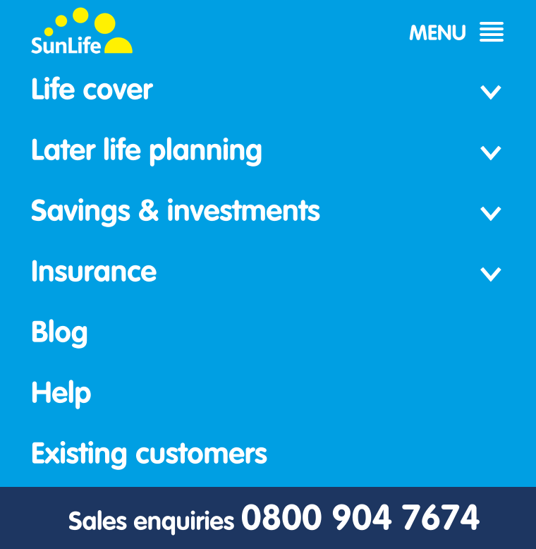
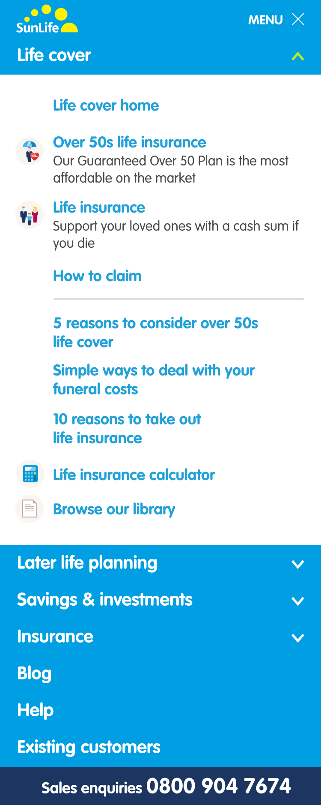
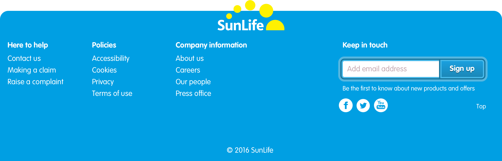
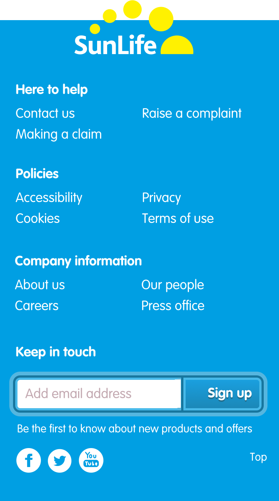

The design of our pages reflects our brand. They’re straightforward and easy to understand. We use subtle curves to structure content, a clear typographic hierarchy and Sunshine elements to lead people towards our calls-to-action.
How our page layouts are constructed
We carefully constructed our page layouts to make it simple for people to learn about our products and services and how to interact with us.

Our curves are partially derived from the arc in our logo. Using them separates sections of content, while partially intersecting both to draw the eye from one to another as it travels down a page.

Roundels are ‘Sunshine elements’ and provide strong focal points which help to draw someone’s eye through the flow of our content towards a call-to-action.

Using curves and roundels correctly creates a Z pattern from left to right and back again. This provides a clear path for someone to follow while they learn about our products and services.
Main navigation
Our main navigation gives people easy access to information about our products and to find out about topics relevant to them. Pressing each main navigation link reveals sub-navigation including links to our products, content from our Content Hub and relevant marketing campaigns.

Large screen main navigation with sub-navigation links hidden. The top row contains help for both existing and new customers while the bottom row is devoted to product information, plus a link to our Blog.

Large screen main navigation with sub-navigation links visible. The left section contains product information, in the centre is content from the Content Hub, and on the right, tools and links to relevant marketing campaigns.
Small screen main navigation
On small screens we collapse our main navigation links behind the ‘Menu’ link. Pressing this link again closes the menu. In the open state, we use a vertical layout to keep our navigation consise, collapsing links into an accordion.

Small screen main navigation with link sections collapsed.

Small screen main navigation with link sections expanded. We don’t include Library images at this size.
Footer
Our footer provides links to information about business rather than our products. It gives people easy access to contact and other information about our company and houses our social media links.

Large screen footer makes full use of our twelve-column grid.
Small screen footer
On small screens we keep our footer consise by arranging links in columns.

Our logo operates as a link to the top of the current page.